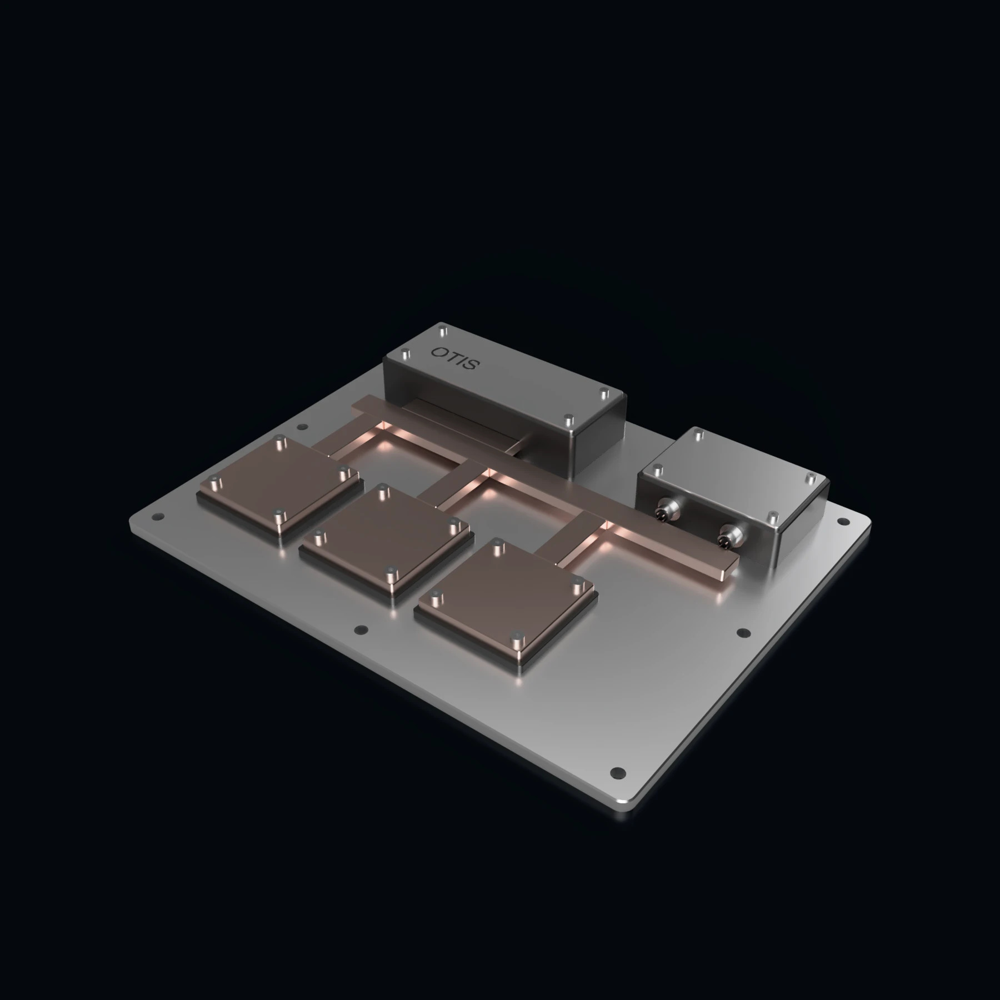
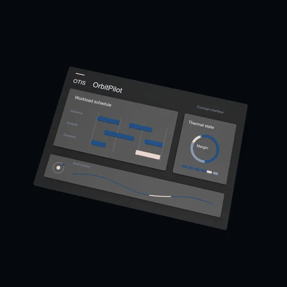
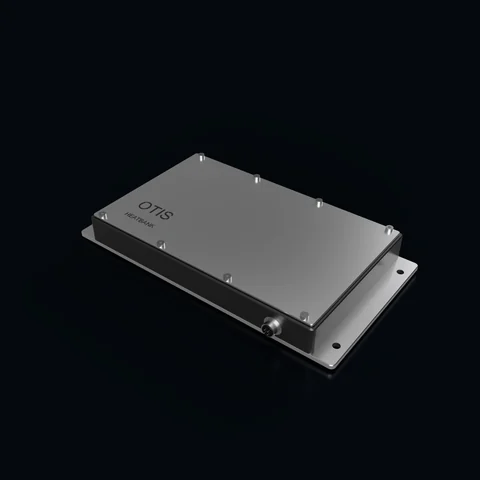
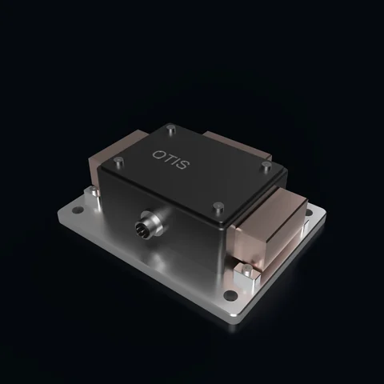
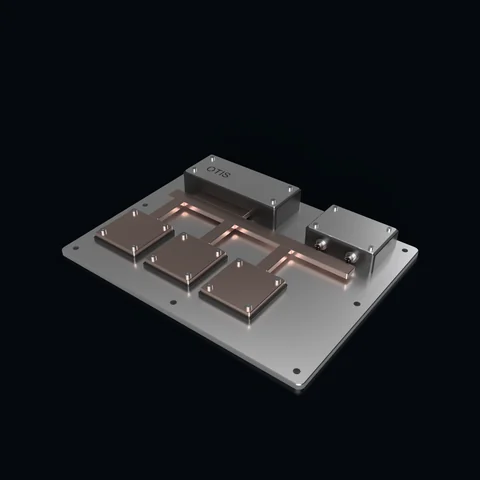
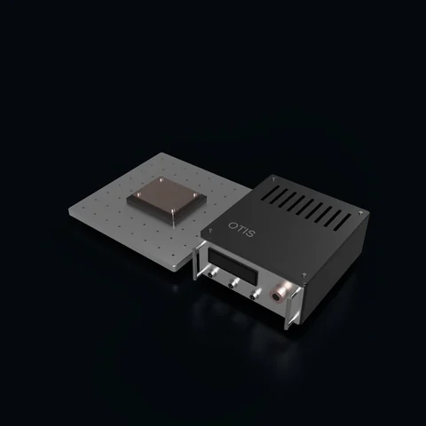

Brady Cruse
Co-founder · Electrical engineering
Brady is a fourth-year MIT undergraduate studying electrical engineering, with a focus on systems and materials engineering. He has also co-founded two other startups.
Spacecraft thermal management
OTIS Space is developing hardware and software to manage heat in high-power spacecraft. Our products cover workload scheduling, thermal storage, heat routing, cooling integration, and ground testing.

Products
Our initial focus is thermal buffering and workload control. Each product below has a defined role in the spacecraft thermal system.
In development

Software to schedule computing tasks using thermal conditions, available power, and mission deadlines.
View product
Sealed thermal-storage cartridges for payloads that generate short periods of excess heat.
View product
Components to connect or isolate heat paths between payloads, thermal storage, and radiators.
View product
A thermal assembly connecting payload cooling hardware, sensors, and control to the spacecraft.
View product
Test tools to reproduce workload profiles and compare thermal designs under defined conditions.
View productProduct specifications and availability will be established through development and testing.
Company
Processors, imaging payloads, and communications equipment produce heat that a spacecraft must store, transport, and eventually reject. Their operating schedules also depend on available electrical power and mission deadlines.
OTIS is designing thermal hardware and control software around those requirements. We are starting with intermittent computing loads, where coordinating workload timing and heat storage may improve the amount of work a payload can complete.
Our team brings together electrical and aerospace engineering. We are seeking spacecraft developers and test partners to help define the first applications.
Development
We start with a payload’s heat-load profile, temperature limits, available power, and task schedule. Those inputs determine whether storage, switching, or workload control is appropriate.
We plan to compare designs with existing thermal hardware and controls under the same conditions, accounting for total mass, energy use, recovery time, and completed work.
Instrumented testing will establish operating limits and check engineering models. Environmental and flight-qualification requirements will be defined with each application.
OTIS Space was founded by two MIT seniors studying electrical and aerospace engineering.
Co-founder · Electrical engineering
Brady is a fourth-year MIT undergraduate studying electrical engineering, with a focus on systems and materials engineering. He has also co-founded two other startups.
Co-founder · Aerospace engineering
Daniel is a fourth-year MIT undergraduate studying aerospace engineering, focused on spacecraft systems and the practical constraints of operating high-power payloads in orbit.
Contact
Contact us about a product, a testing collaboration, or an investment inquiry. For a technical discussion, include your payload, operating conditions, and development timeline.